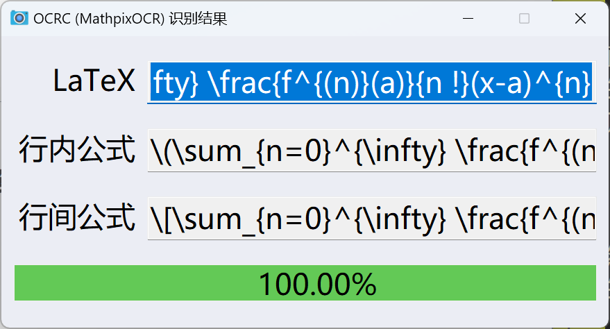

AutoHotkey 脚本 OCRC 介绍
最近 OCRC 更新了挺多，不仅加入了自定义搜索引擎，还补充了翻译这个之前搁置的功能。
然而旧的 README 还停留在未 release 过的 1.1.3 版本，而现在已经到了 2.0.3 版本了，与之前已经有了很大的不同了。也是时候重写一个 README。
注意
以下内容基于版本 2.2.2，未必对其他版本适用。
引言
OCRC 全称为 Optical Character Recognition Commander，中文为道衣，是一个集全了百度 OCR 与 Mathpix OCR的文字 + 公式识别利器。
原中文名是「光学字符识别指挥」。至于现在这个中文名，就跟我的社交软件头像一样，懂的都懂。本篇文章也有对此的提示。
不过因为习惯了，还是以「OCRC」指代本项目。「道衣」只是名义上的中文名称。
下载
最新版本见 Release。
使用说明
OCRC 的使用需要联网，无法离线使用。
菜单
OCRC 的菜单图标如下，是一个相机：
实拍如下：
右键会出现五个选项，分别是「OCRC 设置」「OCR 引擎设置」「导入图片」「导入文件夹」「重启」和「退出」。「OCRC 设置」被加粗，这是默认选项，点击图标会默认打开OCRC 基本设置。OCR 引擎设置用来配置 OCRC 内支持的引擎（百度 OCR，Mathpix OCR 及 Bing OCR）。

OCRC 设置
设置目前共有四个标签页，分别为「Basic」「Advance」「TextOCR」和「FormulaOCR」。
Basic
Basic 标签页又分为三组：「OCR」「截图」和「OCRC」。
OCR
顾名思义，这是 OCR 的总设置。
首先是「文本 OCR」及「公式 OCR」的总开关，不管后面怎么配置，只要这里一关 OCR 就不会启用。
然后是默认引擎的设置。文本 OCR 目前仅支持「百度 OCR」，公式 OCR 则有两个选择，一个是免费的「Bing OCR」（也是默认选项），一个是不免费但强大的「Mathpix OCR」。
然后是两个类型的 OCR 的热键设置，可以点击编辑框然后输入想要的热键。
热键设置有特殊规则：
- 文本 OCR 与公式 OCR 热键不应相同（并没有对此做出限制，但确实不应该这样做）
- 不支持鼠标/游戏杆热键或 Win 键[1]

截图
第一个选项「截图时间」，设置截图最长用时，超时将自动终止 OCR。默认为 10 秒。
第二个选项「缓冲时间」，设置等待截图窗口出现的缓冲时间。由于从快捷键触发截图，到截图窗口激活需要时间，这个时间就是用来检测是否成功开始了截图。如果超时也会终止 OCR。需要注意的是，设置时间过短可能会导致经常性的截图失败。默认是 500 毫秒。
另外缓冲时间是包含在截图时间里的。也就是说，若是设置截图时间 10 秒，缓冲时间 4 秒，那么真正给予的截图时间只有 6 秒。
第三个选项「未检测到截图时抛出警告」，设置是否在未发现截图时弹出警告，有利于发现问题。默认开启。若是不喜欢弹窗也可以选择关闭。
OCRC
这里是 OCRC 设置界面的设置，目前只有一个「设置界面工具提示」的选项，默认开启。
这个选项可以使光标悬停在选项上会出现提示，如下：
但是这个功能有些我不太好描述的缺陷，加上我对程序还是蛮了解的，就关闭了这个选项。
Advance
高级设置
「编码精度」设置的是剪贴板 JPEG 格式图片转为 Base64 的精度。我也不了解，悬停的提示是 GitHub Copilot 写的。默认是 75。
外部截图软件支持
这个组用来设置是否使用外部截图软件。
如果需要的话需先启用，然后设置截图软件的路径。同时支持自定义参数，如我的设置就是：
D:/Software/Snipaste/Snipaste.exe snip -o clipboard |
需要注意的是，OCRC 将剪贴板的图片进行处理，然后通过 API 获取结果。因此外部截图软件截完图必须要复制到剪贴板里。
还有一点需要注意的是，要求截图窗口的 ahk_exe 属性必须和路径中的 exe 文件相同，否则 OCRC 无法正确判断截图窗口是否激活。如下是 Snipaste 的结果，可见是符合的：
目前只测试过 Snipaste，可能其他截图软件有不适配的情况。如果出现了这种情况，那还是得用默认的截图工具。默认采用 Windows 自带截图工具，目前只在 Windows10 与 11 进行了测试，需保证 Windows 有自带截图工具才行。测试方法是 Win + R 打开「运行」，然后输入 ms-screenclip: 并回车运行。如果能成功激活截图，那就可以正常运行。
翻译设置
这部分是设置百度 OCR 的翻译的。
首先是「谷歌翻译代理」，可以设置代理来访问谷歌翻译 API。比如我的设置就是 127.0.0.1:31181。
TextOCR
默认选项
基本是从原「百度 OCR」移植过来的设置。
「默认排版」有三个选择：「智能段落」「合并多行」和「拆分多行」。默认「智能段落」。
API 返回结果有推测的段落信息，「智能段落」将其处理得到结果。「合并多行」及「拆分多行」显而易见。
「默认标点」有四个选择：「智能标点」「中文标点」及「英文标点」。默认「智能标点」。
「智能标点」是我自己写的根据上下文判断标点的算法，只是实验性的，也许存在一些问题。剩下两个很好理解，就是全部标点都转换。
「默认空格」有三个选择：「智能空格」及「去除空格」。默认「智能空格」。
「智能空格」也是我自己写的根据上下文自动空格的算法，也只是实验性的，同时处理情况比较局限，对于网址、路径等情况的处理非常差。「去除空格」就是去除结果中所有空格。
「原始结果」于 2.2.0 移除。
翻译功能由两个选项「默认翻译原始语言」和「默认翻译目标语言」配置。要添加新的语言支持需要到配置文件中进行设置。
默认有三种语言「自动检测」「简体中文」和「英文」，其中「默认翻译目标语言」无法设置「自动检测」。语言对应表参见谷歌文档。添加示例如下：
显示语言名称=语言代码 |
「默认搜索引擎」默认自带五个选择：「必应」「百度」「谷歌」「百度百科」和「维基百科」。默认选择是「百度」。
「默认搜索引擎」可以进行自定义配置，需要在配置文件中进行设置。
打开配置文件 OCRC.ini。有一个部分名为 BaiduOCR_SearchEngines，然后按照如下格式进行添加：
搜索引擎名称=搜索引擎链接 |
名称里不可以包含 =，其余随意。@W（大写）将会被替换为结果。
另外名为「Everything」的搜索引擎有内置支持，只需要设置 Everything 的路径即刻，如下是我的设置：
Everything=D:/Software/Everything/Everything.exe |
「搜索时关闭结果窗口」选项，如果开启了，在你使用搜索后，结果窗口会自动关闭。默认开启。
FormulaOCR

默认选项
「行内公式」有两个选择：「$...$」和「\(...\)」。默认是美元符号。
区别就是 $\alpha$ 和 \(\alpha\)，实际显示都是 。
「行间公式」也有两个选择：「$$...$$」和「\[...\]」。默认也是美元符号。
区别就是
1 | $$ |
1 | \[ |
实际显示都是
「默认选择」有三个选择：「LaTeX」「行内公式」及「行间公式」。默认为「LaTeX」。
「LaTeX」即为不包含数学分隔符的纯 内容；「行内公式」「行间公式」即为分别包含对应分隔符的内容。
另外还有一个没有列出的选项「文本公式」，Mathpix 会智能识别文本和公式，然后返回文本公式结果，文本公式结果在文本和公式混排时效果比较好。在有文本公式，且文本公式不以环境开头时，无论如何文本公式都是默认选择的。
OCR 引擎设置
BaiduOCR
基础设置
然后是 API Key 和 Secret Key。在这里我不过多解释，直接复制原版 README 的内容，更详细的内容也可以自行搜索得到。
这是百度 OCR API 的相关信息，具体详见文字识别 OCR - 新手操作指引或百度关键词「百度 OCR API 申请」进行申请。截至 2022-04-04（即原 README 撰稿日），新用户可领取如下调用福利。
依照上面指示获取到 API Key 与 Secret Key 后填入设置即可。需要注意的是，这两个信息需要严格保密。
支持的识别类型包括通用文字（标准）识别、通用文字（高精度）识别、手写文字识别、网络图片识别（默认是第一个，下同）。除了手写文字识别是 500次/月 外其他都是 1000次/月。
我的建议是全部都用高精度识别。经过不完全的测试，对于手写文字，手写文字识别与高精度识别不相上下，而标准识别一塌糊涂，而高精度识别一般来说次数够用，因此更推荐使用高精度识别。
另外不需要 API Key 与 Secret Key 实际上也是能使用百度 OCR 的，详见下面配置文件的介绍。
识别类型有四种：
- 通用文字（标准）识别
- 通用文字（高精度）识别
- 手写文字识别
- 网络图片文字识别
我用的都是高精度。
然后是「置信度」设置。置信度有三种，默认为精准：
- 精准
- 模糊
- 关闭
如下是模糊时的样子：
精准和模糊的区别只是算法不同。百度 OCR API 返回每行的结果及置信度。精准置信度的计算方法是将每行字符个数作为权重，综合计算置信度；而模糊置信度则是直接累加置信度并除以行数。
MathpixOCR
基础设置
设置「App ID」及「App Key」。
App 的内容复制了旧版 README。
获取请百度关键词「Mathpix API 申请」，1000次/月，需要信用卡，超额会扣款（具体不清楚）。
然后一样的要填入，也一定要注意保密！
另外我好像看到新闻 API 好像免费次数给砍了，具体我不清楚。
配置文件
在没有配置文件时运行 OCRC 或打开 OCRC 设置界面都会创建一个默认配置文件 OCRC.ini。在初次运行时还会放置一个 ahk-json.dll 文件，这个文件是用来解析 JSON 的，如果不慎删除可以重启 OCRC 来重新获得。
这便是配置文件的全貌了，默认情况下除了 BaiduOCR_TokenExpiration 不同外都是相同的。如果不明白相关含义，请不要擅自更改。
不过我的名称取得还是比较清晰的，也可以和设置里进行对应。
上面提及了不使用 API Key 和 Secret Key 也能使用百度 OCR，其实就是用了 Token。
Token 是发送给百度 OCR 的有效期为 30 天的认证字串，如果没有 API Key 和 Secret Key，但是有 Token 的话，可以写在 BaiduOCR_Token 后面。
BaiduOCR_TokenExpiration 是 Token 过期时间。OCRC 将在 Token 过期后重新获得 Token。如果是使用 Token 进行 OCR 的需要将此值调大。
结果窗口
百度 OCR
以澎湃新闻 - 英国第二大城市伯明翰市政府宣布破产为例进行演示。

结果如下：
左上角显示了识别类型。下面的绿条和数值是置信度。
我使用了「通用文字（高精度）识别」，结果看起来还不错，智能段落也很让人满意，智能标点和智能空格在这个情景工作也挺正常。
可以看到排版选项会清除标点和空格的处理。这是因为排版选项直接修改 API 返回的文本。可以用这个特性恢复初始情况。
这是标点和空格的处理。
这是谷歌翻译（中->英）的结果。
原始文本和翻译文本的对比
原文
在一份联合声明中，伯明翰市工党议会的领导人约翰·科顿（John Cotton）和莎伦·汤普森（Sharon Thompson）表示，此举是“我们寻求让我们的城市重新建立稳健财政基础的必要步骤”。而与英国各地的地方政府一样，伯明翰市政府“显然面临着前所未有的财政挑战”，包括社会关怀需求的大幅增长、商业税收入的急剧减少、通胀率居高不下等。该声明指出，伯明翰市已在7月实施了严格的支出控制措施，并请求了额外的战略支持。
根据伯明翰市政府发布的通知，除保护弱势群体等任务所需的必要开支外，该市将暂停一切其他开支，以保证核心服务的正常进行。
据悉，伯明翰市破产与其背负的高额索赔账单有关。此前，该市百余名从事教育、餐饮等行业的女性因其薪酬待遇差于同职位男性而将伯明翰市政府告上法庭，要求实现同工同酬，最终最高法院判其胜诉。
自2012年以来，伯明翰市政府已为此事支付了近11亿英镑的赔款。今年7月，该市市政府透露称，还有7.6亿英镑的相关赔款尚未赔付。伯明翰市议会表示，同工同酬索赔的费用正以每月500万英镑至1400万英镑的速度递增，该市必须为迄今为止累积的赔款债务提供资金，但却没有资源这样做，因此在7月便已暂停非必要开支。
OCRC
在一份联合声明中，伯明翰市工党议会的领导人约翰·科顿(JohnCotton)和莎伦·汤普森(Sharon Thompson)表示，此举是“我们寻求让我们的城市重新建立稳健财政基础的必要步骤”。而与英国各地的地方政府一样，伯明翰市政府“显然面临着前所未有的财政挑战”，包括社会关怀需求的大幅增长、商业税收入的急剧减少、通胀率居高不下等。该声明指出，伯明翰市已在 7 月实施了严格的支出控制措施，并请求了额外的战略支持。
根据伯明翰市政府发布的通知，除保护弱势群体等任务所需的必要开支外，该市将暂停一切其他开支，以保证核心服务的正常进行。
据悉，伯明翰市破产与其背负的高额索赔账单有关。此前，该市百余名从事教育、餐饮等行业的女性因其薪酬待遇差于同职位男性而将伯明翰市政府告上法庭，要求实现同工同酬，最终最高法院判其胜诉。
自 2012 年以来，伯明翰市政府已为此事支付了近 11 亿英镑的赔款。今年 7 月，该市市政府透露称，还有 7.6 亿英镑的相关赔款尚未赔付。伯明翰市议会表示，同工同酬索赔的费用正以每月 500 万英镑至 1400 万英镑的速度递增，该市必须为迄今为止累积的赔款债务提供资金，但却没有资源这样做，因此在 7 月便已暂停非必要开支。
谷歌翻译
In a joint statement, Birmingham Labor council leaders John Cotton and Sharon Thompson said the move was "a necessary step in our quest to put our city back on sound financial footing". ". Like local governments across the UK, the City of Birmingham "clearly faces unprecedented financial challenges", including a substantial increase in demand for social care, a sharp reduction in business tax revenue and high inflation. The statement noted that the City of Birmingham had implemented strict spending controls in July and had requested additional strategic support.
According to a notice issued by the Birmingham City Government, except for necessary expenditures required for tasks such as protecting vulnerable groups, the city will suspend all other expenditures to ensure the normal operation of core services.
It is reported that the bankruptcy of Birmingham City is related to the high claims bill it is burdened with. Previously, more than a hundred women engaged in education, catering and other industries in the city took the Birmingham City Government to court because their pay was worse than that of men in the same position, demanding equal pay for equal work. In the end, the Supreme Court ruled in favor of them.
The City of Birmingham has paid almost £1.1bn in reparations since 2012. In July this year, the city's council revealed that £760m in related compensation had yet to be paid. Birmingham City Council said the cost of equal pay claims was rising at a rate of between £5 million and £14 million a month and that the city had to fund the compensation debt it had accumulated so far but did not have the resources to do so in July. Suspend non-essential spending.
然后这是搜索。由于内容过长，进行搜索可能会出错，我就换了个比较短的文本。
右键可以实现快速搜索。
编辑框可以自由修改，剪贴板会时刻记录最新内容（当然容易污染剪贴板）。
「排版」的重置功能。

支持多窗口，多翻译窗口等。
然后演示一下「识别语言」的切换。（引擎因为只有一个，演示没啥必要）
首先讲一下如何添加自定义语言：一样是打开配置文件，有个块 BaiduOCR_LanguageTypes，按 显示语言名称=语言代码 添加到这个块。默认有「中英文混合」及「英文」。语言对应表参见百度文档。
由于我用纯「英文」去识别中文也有较高准确率，因此我特意添加了个 日语=JAP 来进行测试。
以 Wikipeidia - らんま1/2 为例进行演示。

可见「中英文混合」结果明显不如「日语」。
结果对比与翻译
原文
早乙女乱馬は、幼少の頃より無差別格闘流の修行に励む高校生。ある時、修行のため中国へ渡ったが、父・早乙女玄馬と共に悲劇的伝説が伝わる泉が多く湧く修行場「呪泉郷」で稽古中に、父の玄馬は熊猫溺泉（ションマオ・ニーチュアン、パンダが溺れた泉）に、乱馬は娘溺泉（ニャン・ニーチュアン、若い娘が溺れた泉）に落ち、それぞれ水をかぶるとパンダと女の子になり、お湯をかぶると元の姿に戻るという変身体質を背負ってしまった。
百度 OCR「日语」
早乙女乱馬は、幼少の頃より無差別格闘流の修行に励む高校生。ある時、修行のため中国へ渡ったが、父・早乙女玄馬と共に悲劇的伝説が伝わる泉が多く湧く修行場「呪泉郷」で稽古中に、父の玄馬は熊猫溺泉（ションマオ・ニーチュアン、パンダが溺れた泉）に、乱馬は娘溺泉（ニャン・ニーチュアン、若い娘が溺れた泉）に落ち、それぞれ水をかぶるとパンダと女の子になり、お湯をかぶると元の姿に戻るという変身体質を背負ってしまった。
百度 OCR「中英文混合」
早乙女乱馬、幼少）無差别格流修行励高校生。時、修行龙中国八渡、父·早乙女玄馬共悲劇的伍说伍泉多<湧<修行場「呪泉
卿」稽古中 C, 父玄馬熊猫溺泉(3>才·二一手 1>、八>夕溺机
泉）C, 乱馬（娘溺泉（二ャ>·二一手 1, 若娘溺机泉）落、子机
水八>女子、湯办元姿变身体質在背負ま。
谷歌翻译
早乙女乱马是一名高中生，从小就接受随机格斗术的训练。某日，他前往中国训练，但在与父亲早乙女玄马一起在有着许多据说有悲惨传说的泉水的训练场“十三峡”练习时，父亲玄马被一只熊淹死了。猫溺水泉。乱马掉进少女淹死的泉水中（念涅川，少女淹死的泉水），当它们被水淹没时，它们变成了熊猫和女孩，当它们被淹没时，它们变成了熊猫和女孩。喝了热水就又恢复原状了，我的体质负担很重。
展示一下置信度条其他颜色：
直接缩放网页 25% 都还是 95%+ 的置信度，而且粗略准确度还可以。于是只好贴图然后弄到 20%，终于黄条了。
注意
这是 2.0.2 的图，与最新版界面不一致，只是为了展示黄条置信度。
然后怎么搞都搞不到红条，还发现了算置信度的除以 0 的 bug。只好用老图了。
注意
这是 v1 版本的图，与最新版界面不一致，只是为了展示红条置信度。
百度置信度在 80% 以上才是绿色的，60%~80% 是黄色的，60% 以下是红色的。
2.2.2 加入了文本 OCR 结果窗口保存功能。
若有同名文件，可选择是否覆盖文件。
Bing OCR
Bing OCR 是 Bing 的公式识别 OCR，于 2.1.0 正式集成于 OCRC 中，且作为默认公式 OCR 引擎。优点是免费且无需代理。但是缺点也是很明显的：
- 准确率不高
- 格式丑陋
- 不支持文本公式混排（其实返回结果有一个
latex有一个text，但text效果不行，我就只输出latex了）
以维基百科 - 泰勒级数为例进行演示。
结果如下：
\sum _ { n = 0 } ^ { \infty } \frac { f ^ { ( n ) } ( a ) } { n ! } ( x - a ) ^ { n } |
$\sum _ { n = 0 } ^ { \infty } \frac { f ^ { ( n ) } ( a ) } { n ! } ( x - a ) ^ { n }$ |
1 | $$ |
2.1.0 加入了 OCR 引擎切换的选项。
可以看到结果确实是异常的丑陋，主要是多出来空格，也许后面可以处理一下。
行内公式：；行间公式：
渲染结果倒是完全正确。
这个文本公式混排我也测试了一下，不会输出文本（因为经我测试质量不高，于是我就只保留了公式），下面是结果：
\sum _ { n = 0 } ^ { \infty } \frac { f ^ { n } ( n ) } { n ! } ( x - a ) ^ { n } |
$\sum _ { n = 0 } ^ { \infty } \frac { f ^ { n } ( n ) } { n ! } ( x - a ) ^ { n }$ |
1 | $$ |
有一点瑕疵，如 识别成了 。
再测试一个复杂一点的：
\left. \begin{array} { l } { f ( x ) = f ( a ) + \frac { x - a } { h } ( A _ { i i } f [ ( a ) + \frac { x - a - h } { 2 h } ( ( A ) ^ { 2 } ( A ) + \cdots ) } \\ { = f ( a ) + \sum _ { k = 1 } ^ { n } \frac { A _ { i f } ( a ) } { k h ^ { k } } \right. |
$\left. \begin{array} { l } { f ( x ) = f ( a ) + \frac { x - a } { h } ( A _ { i i } f [ ( a ) + \frac { x - a - h } { 2 h } ( ( A ) ^ { 2 } ( A ) + \cdots ) } \\ { = f ( a ) + \sum _ { k = 1 } ^ { n } \frac { A _ { i f } ( a ) } { k h ^ { k } } \right.$ |
1 | $$ |
错误百出，报错，我只好自己修改一点才能勉强展示：
\left. \begin{array} { l } { f ( x ) = f ( a ) + \frac { x - a } { h } ( A _ { i i } f [ ( a ) + \frac { x - a - h } { 2 h } ( ( A ) ^ { 2 } ( A ) + \cdots ) \\ = f ( a ) + \sum _ { k = 1 } ^ { n } \frac { A _ { i f } ( a ) } { k h ^ { k } } } \end{array} \right. |
结果展示：
这结果是相当之糟糕，还用了个莫名其妙的 array。遇到这种情况，就需要切换识别引擎了：

Mathpix OCR
注意
结果窗口是 2.0.2 版本的，2.1.0 还有一个引擎切换的选项。同时 Bing OCR 也支持 Click2Clip，为了避免重复劳动就不重新截图了。
同样以维基百科 - 泰勒级数为例进行演示。
结果如下：

\sum_{n=0}^{\infty} \frac{f^{(n)}(a)}{n !}(x-a)^{n} |
$\sum_{n=0}^{\infty} \frac{f^{(n)}(a)}{n !}(x-a)^{n}$ |
1 | $$ |
渲染结果：行内 及行间
Mathpix OCR 我最引以为傲的就是这个 Click2Clip 功能。点击想要的结果窗口，就能直接复制里面的内容。
编辑框无法进行编辑，这点与百度 OCR 不同。不过在这里编辑又没有实时渲染，编辑了也没有用。还有一点比较遗憾的是刚打开时它会默认全选整个编辑框，重构前的 v1 是不会的，原因是什么我也不知道，虽然没影响但是有点不美观。
更新
2.1.0 版本修复了这个美观问题。不过就看不出来默认选择的是哪个了，只有剪贴板记录了默认选择。
这是文本和公式混排的情况。
1 | 在数学上，对于一个在实数或复数 $a$ 邻域上，以实数作为变量或以复数作为变量的函 数，并且是无穷可微的函数 $f(x)$ ，它的泰勒级数是以下这种形式的幂级数： |
谦虚的 Mathpix，完全正确的结果它的置信度只有 43.48%，如果百度是这个置信度，那就是一堆乱文了。
因此 Mathpix 置信度在 60% 以上都是绿色的，20%~60% 是黄色的，20% 以下才是红色的。
这是旧图的红色置信度显示，不舍得让 Mathpix 瞎搞。
这是一个四个都出现的情况，这种情况下默认选择的是配置里设置的。
下面是四个结果展示：
1 | \begin{aligned} |
1 | $\begin{aligned} |
1 | $$ |
$\begin{aligned} f(x) & =f(a)+\frac{x-a}{h}\left(\Delta_{h}^{1}[f](a)+\frac{x-a-h}{2 h}\left(\Delta_{h}^{2}[f](a)+\cdots\right)\right) \ & =f(a)+\sum_{k=1}^{n} \frac{\Delta_{h}^{k}[f](a)}{k ! h^{k}} \prod_{i=0}^{k-1}((x-a)-i h)\end{aligned}$ |
然后我突然忘了这种情况下文本公式的意义了。而且文本公式结果还出错了，换行符只有一个 \。待我慢慢研究这陈年老代码吧，顺便看看 commit 记录和 CHANGELOG，也许能找到些端倪。
另外行内公式出现换行符属实是不应该，这些后面都要进行处理，不写 README 还真不知道。
注意
以上内容已过时。「行内公式出现换行」及「文本公式结果换行符 \\ 被替换成 \」的问题已在 2.1.0 中修复。
挑一个行间展示一下：
感叹 Mathpix 是真的牛，希望有好的开源替代，白嫖内心不安。
导入
2.2.0 加入了导入图片和文件夹进行文本 OCR 识别的功能。入口在任务栏菜单里。
仅支持文本 OCR，公式 OCR 由于我认为意义不大，加上还要额外耗费精力，就不支持了。
支持图片格式包括 jpg, jpeg, png 和 bmp。参考百度 API 文档 image 参数说明。
图片可以进行多选，文件夹由于 Windows 的限制只能选择一个。
导入图片会为每个图片生成一个 OCR 结果窗口；导入文件夹则会为文件夹内每个图片生成对应的 txt 文件，如 example.img 对应的 txt 文件为 example.img.txt。
导入文件夹不支持递归操作。
2.2.2 支持覆盖文件的提示和设置，以下是导入文件夹的覆盖提示：
可选择「跳过」「覆盖」或「总是覆盖」。
完成结果输出后会弹出提示。
错误
OCRC 自带的错误不多，只有几个：
首先是未检测到截图的错误。如果在 Basic 设置里开启了，然后没检测到截图（例如外部截图软件设置不当，缓冲时间设置过短，终止了截图等）就会弹出报错。
然后就是百度 OCR 搜索的错误。分别是 Everything 和普通搜索引擎，如果运行失败就会报错。
然后就没了。由于我自己写的程序不完善，有时候会弹出 AutoHotkey 的报错，这时候重新截图就好了。
最后就是百度 OCR 和 Mathpix OCR 自己的报错。详见下面的文档。
| OCR | 类型 | 网址 |
|---|---|---|
| 百度 | Token | https://ai.baidu.com/ai-doc/REFERENCE/Ck3dwjhhu |
| 百度 | 识别 | https://cloud.baidu.com/doc/OCR/s/dk3h7y5vr |
| Mathpix | 识别 | https://docs.mathpix.com/#error-id-strings |